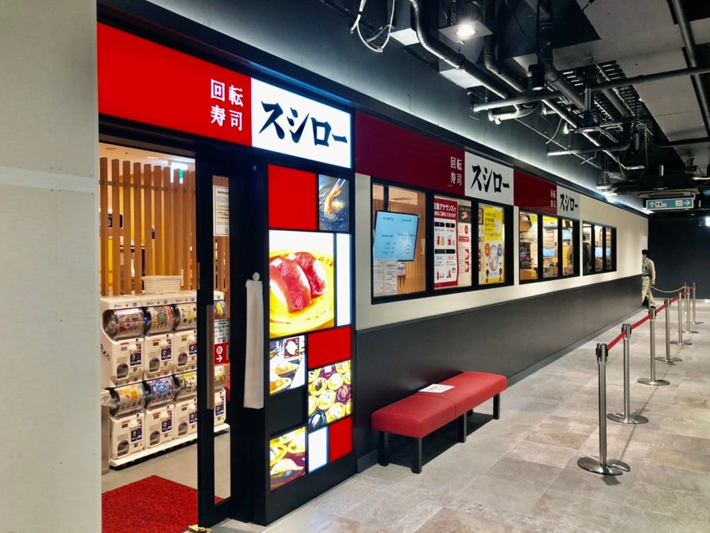
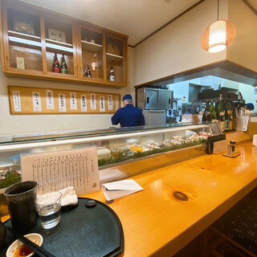
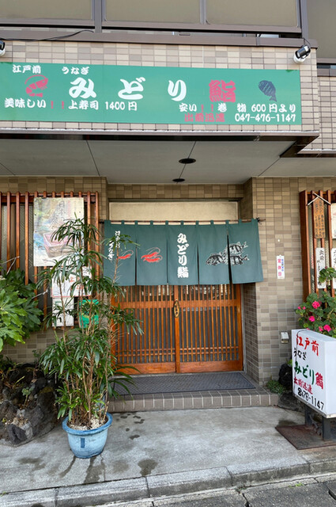

寿司屋
information

スシロー ロハル津田沼店
お寿司屋さんといえばここ！ クオリティが高い上に価格が安いので学生に大人気！
住所 千葉県習志野市谷津7丁目7-1, Loharu津田沼 B1F
アクセス JR津田沼駅から徒歩10分
営業時間
月～金 11:00～23:00
土日祝 10:30～23:00
※ラストオーダーは閉店時間の30分前となります。
詳細はこちら

寿司処 香
入口から覗くと高級店の雰囲気で、落ち着いた雰囲気の会食やデートにぴったり！
住所 千葉県船橋市前原西2丁目17-10
アクセス JR津田沼駅から徒歩5分
営業時間 17:30～22:00（LO.２１：００）
ドリンクLO.21:30
定休日 月曜日、第3火・水曜日（11月21・22日、12月19・20日）
臨時休業日 11月12日(日)
11月19日(日)・23日(木)
11月は、19日～23日まで休業、
24日より通常営業致します。
年末年始の休業は12月29日(金)～1月8日(月)までとなります。
詳細はこちら

みどり鮨
お人柄の良さそうなご夫婦が営む地域密着型のお寿司屋さん。
ネタが新鮮なのは言うまでもなく、大きめのネタとシャリのバランスもよく、ボリューム十分！
住所 千葉県船橋市前原西2丁目2-2
アクセス JR津田沼駅から徒歩7分
営業時間
12:00~13:30
18:00~22:30
日曜営業
定休日:水曜日
営業時間・定休日は変更となる場合がございますので、ご来店前に店舗にご確認ください。
詳細はこちら